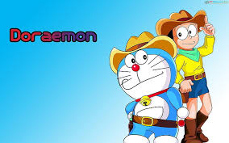
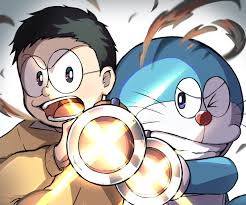

 Nobita Hiroshi, a 9-year-old boy from Japan, seemed healthy and happy like any other boy his age, except Nobita was hiding a secret from the world. He was suffering from schizophrenia, a disease which makes one see things that do not exist.
So real they seem to the victim that they absolutely refuse to believe that it isn't true. Thus, the seemingly lonely and misunderstood Nobita created, in his mind, the adorable Doraemon that would give him everything he ever wanted and more.
Being alienated in school, being misunderstood everywhere else and thanks to his schizophrenic mind, Doraemon became his best friend, the only friend who would understand him.